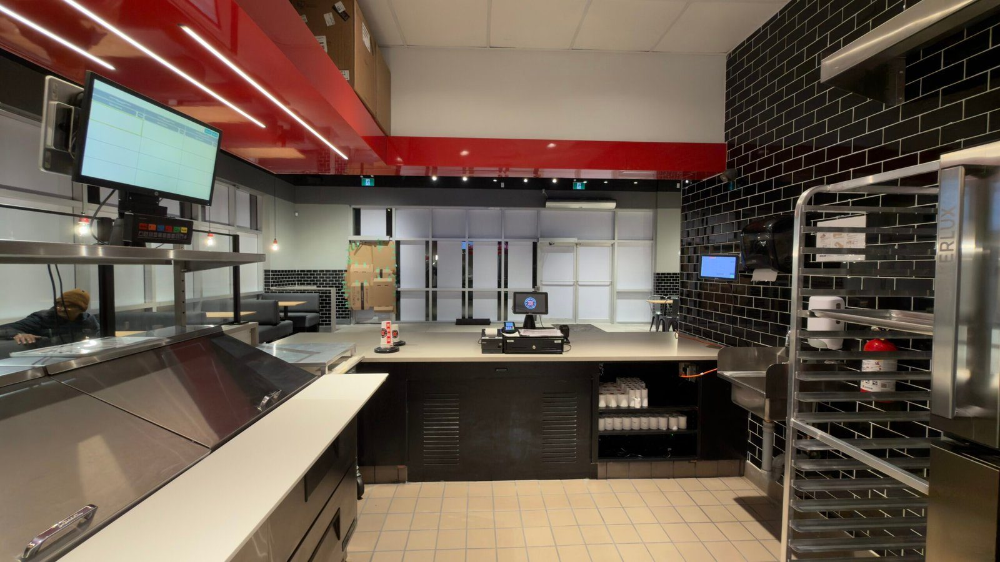
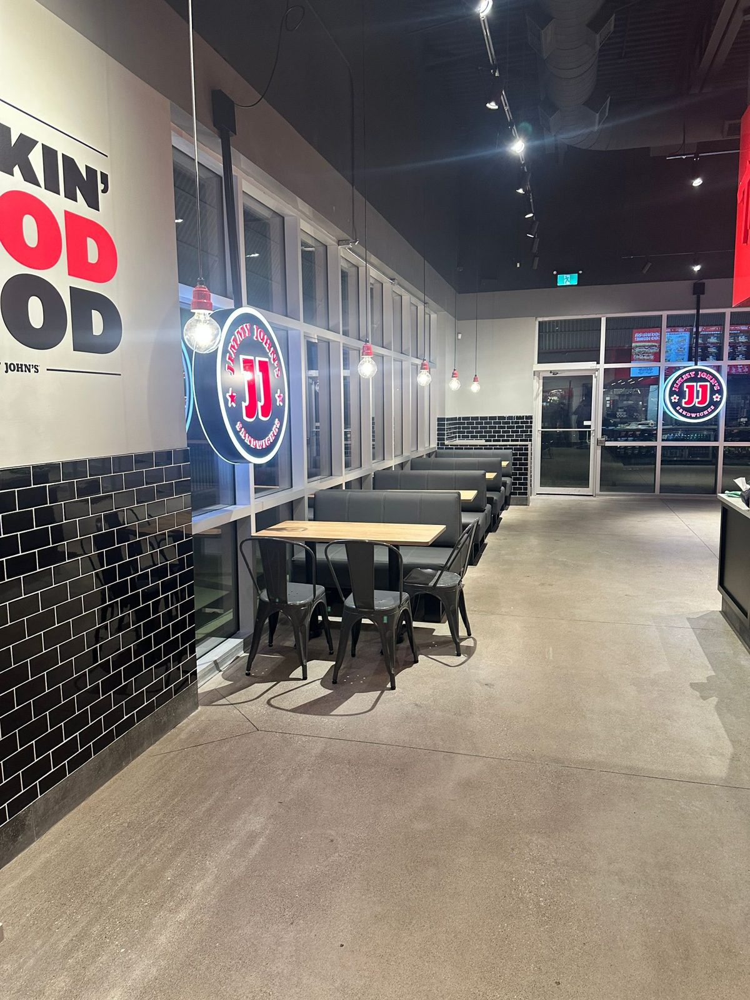
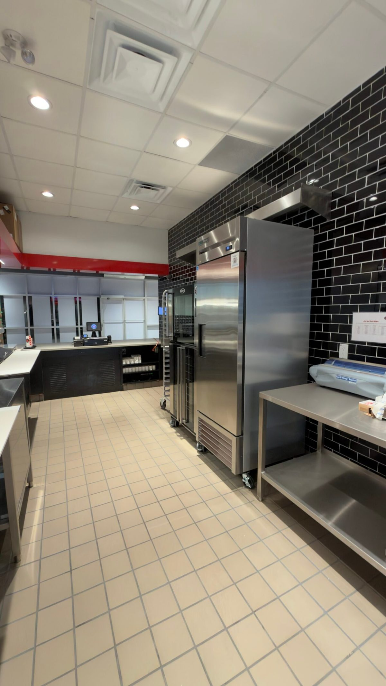
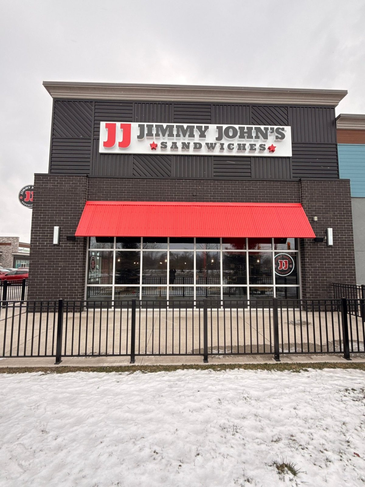

Quick-service restaurant / Windsor, Ontario
Jimmy John’s
A clear route from order to service.
A quick-service restaurant with a streamlined counter, preparation areas and seating organised around the brand’s service experience.
Completed under LifeBuild Canada. Shown here as prior project experience; the documented work follows.

View photographThe work
The thinking.
The making.
- Front-of-house service counter
- Back-of-house preparation areas
- Interior finishes and brand integration
- Dine-in and takeaway layout
The layout connects ordering, kitchen operations, dine-in and takeaway. Its scope connects the front-of-house counter with the back-of-house preparation areas, supported by clean finishes and a consistent brand palette.
The photographs show the relationship between the service counter, preparation surfaces and seating. Red wall accents and black tile carry the brand through the interior; the exterior images show the completed street presence.
Counter layout · Preparation areas · Brand consistency
A closer look
The space, in detail.


View photograph

View photograph

View photographPlanning a renovation, hospitality interior or commercial build?
Tell us about your projectPrefer email? Write to info@terranode.ca.